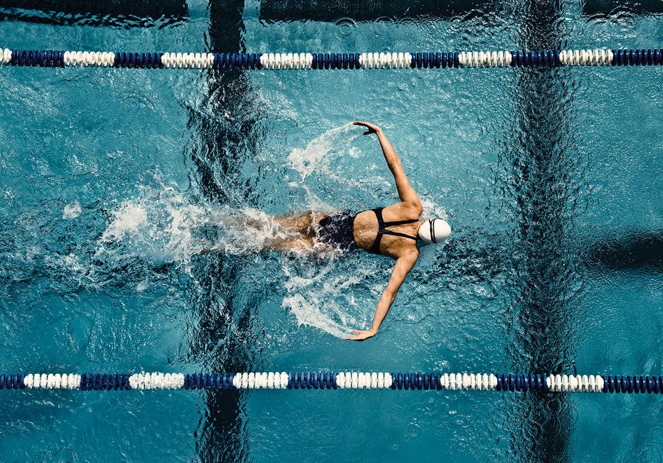
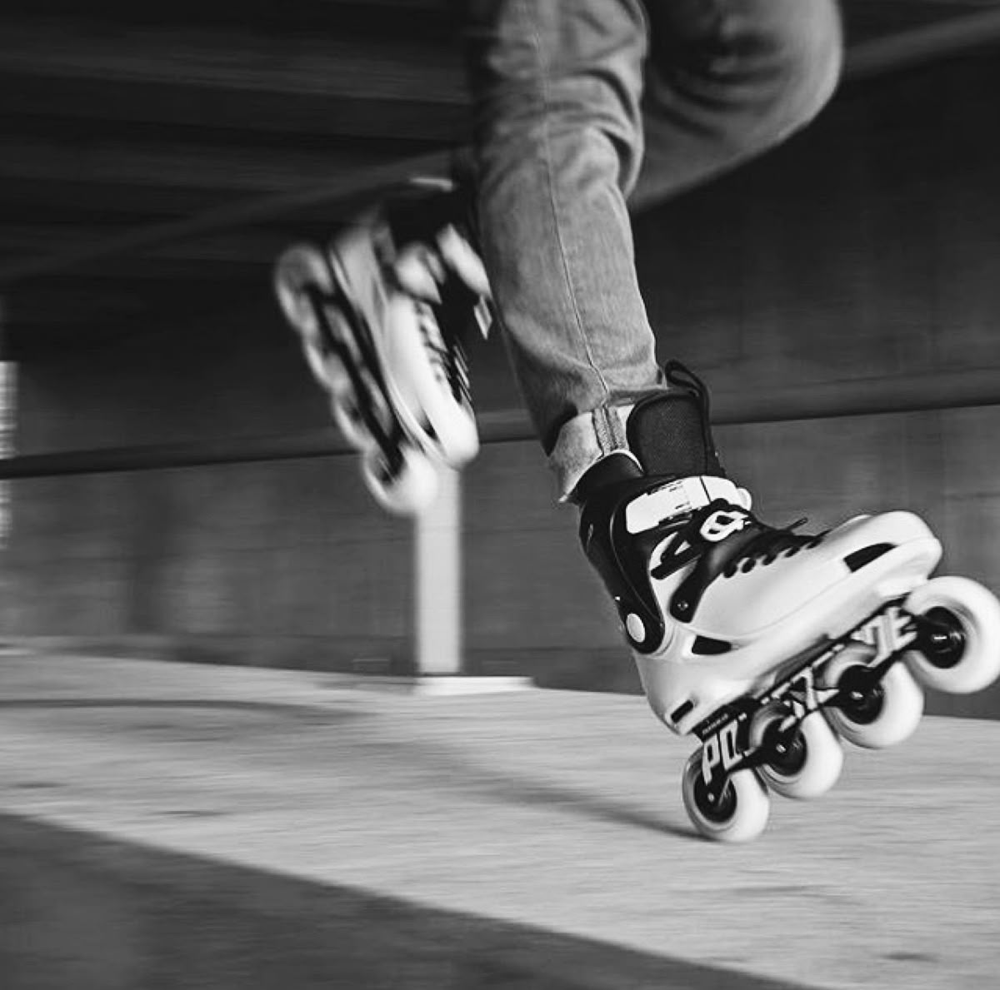
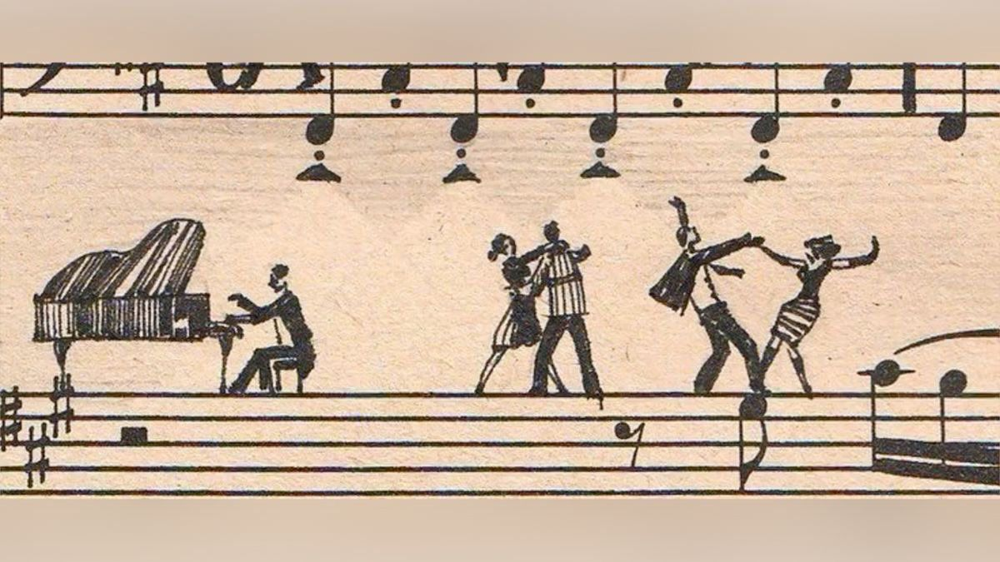

Me considero una persona curiosa y activa, y por eso mis aficiones son variadas y me ayudan a mantener
un equilibrio. Entre ellas, la natación ocupa un lugar muy importante.
Este deporte no solo me permite mantenerme en forma, sino que también es una manera perfecta de
desconectar del día a día y relajarme después de un día ajetreado.

Patinaje
Otra actividad que disfruto muchísimo es el patinaje. Me encanta la sensación de libertad que se siente y
el viento en la cara, además de que me puedo desplazar mucho más rápido que caminando.
Es una mezcla de ejercicio, diversión y desconexión.

Música
La música, por su parte, es una de mis pasiones. Desde pequeña he encontrado en ella
la manera de expresarme y de relajarme cuando me agobio. Toco el piano y la flauta travesera, dos
instrumentos muy distintos entre sí que me permiten disfrutar de la música de maneras diferentes.
Disfruto tanto de interpretar piezas clásicas como de experimentar con nuevos estilos.

Idiomas
Además, me encanta el mundo de los idiomas. Hablo inglés con fluidez, me desenvuelvo en francés y tengo
nociones básicas de aleman. Para mí, cada idioma es una puerta abierta a nuevas culturas, costumbres y maneras
de pensar. Aprender a comunicarme en otras lenguas no solo amplía mis oportunidades, sino que también
enriquece mi visión del mundo y me conecta con personas de diferentes orígenes.
Todas estas aficiones, aunque distintas entre sí, tienen algo en común: me ayudan a aprender y a
descubrir nuevas perspectivas. Ya sea en una piscina, sobre ruedas, a través de una
partitura o en una conversación en otro idioma, cada experiencia suma y me ayuda a crecer como persona.